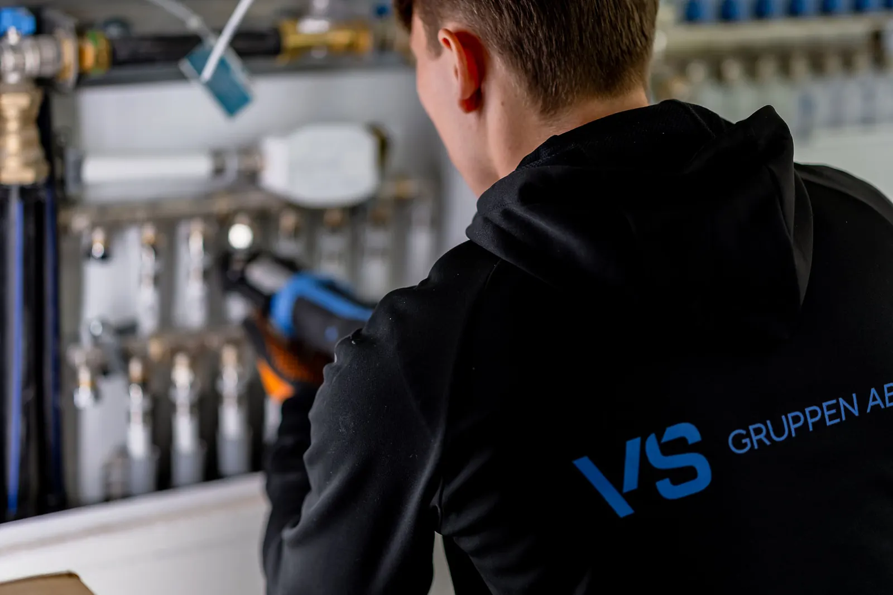

Värmepump · Luft-vatten
Luft-vatten — stor besparing,
ingen borrning.
En luft-vattenvärmepump hämtar energi direkt ur utomhusluften och skickar den in i husets vattenburna system. Du slipper borrhål, får både värme och varmvatten, och kan sänka uppvärmningskostnaden med upp till 60 %.

Så fungerar luft-vatten
- 1
Utedel fångar energin
En utomhusenhet placeras vid husväggen och utvinner värmeenergi ur luften — den fungerar ner till cirka −20 °C.
- 2
Värmen växlas till vatten
Energin överförs till husets vattenburna system — radiatorer eller golvvärme — och till varmvattenberedaren.
- 3
Styr allt själv
Moderna pumpar styrs via app och anpassar sig automatiskt efter väder och ditt hushålls mönster.
Fördelarna
- Upp till 60 % lägre uppvärmningskostnad
- Ingen borrning — lägre investeringskostnad
- Värme och varmvatten i samma system
- Passar både nybygge och äldre hus med vattenburen värme
- Snabb installation, oftast 1–2 dagar
- App-styrning och smart väderanpassning
Luft-vatten passar dig som…
- Har vattenburet värmesystem men vill undvika borrning
- Har en tomt där bergvärme är svårt eller dyrt att borra
- Vill ha en lägre investering med snabbare återbetalningstid
- Byter ut en äldre olje- eller elpanna
Beräkningsmall
Hur mycket kan du spara?
Kalkylen är en uppskattning baserad på schablonvärden. Vid det kostnadsfria hembesöket räknar vi på just ditt hus.
Vanliga frågor
Vad kostar en luft-vattenvärmepump?
En komplett installation ligger typiskt på 90 000–160 000 kr före ROT-avdrag beroende på pumpstorlek och husets förutsättningar. Fast pris i offerten, och vi ordnar ROT-avdraget.
Fungerar den på vintern?
Ja — moderna pumpar arbetar effektivt ner till cirka −20 °C. Vid extremkyla kompletterar en inbyggd elpatron, så huset är alltid varmt.
Låter utedelen mycket?
Dagens modeller ligger runt 50 dB — ungefär som ett kylskåp. Vi hjälper dig placera utedelen så att varken du eller grannarna störs.
Hur lång livslängd har den?
Räkna med 12–18 år. Med vårt serviceavtal håller vi pumpen i toppskick och fångar slitage innan det blir dyrt.
Redo att ta nästa steg?
Kostnadsfritt hembesök, fast pris och Säker Vatten-certifierad installation. Vi ordnar ROT-avdraget.